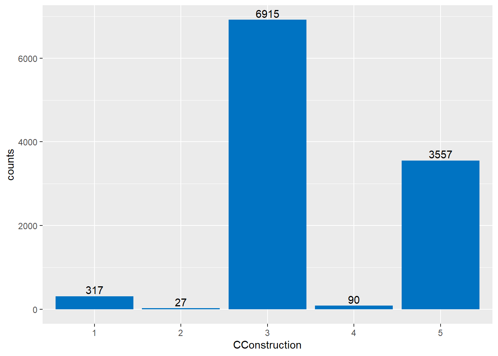
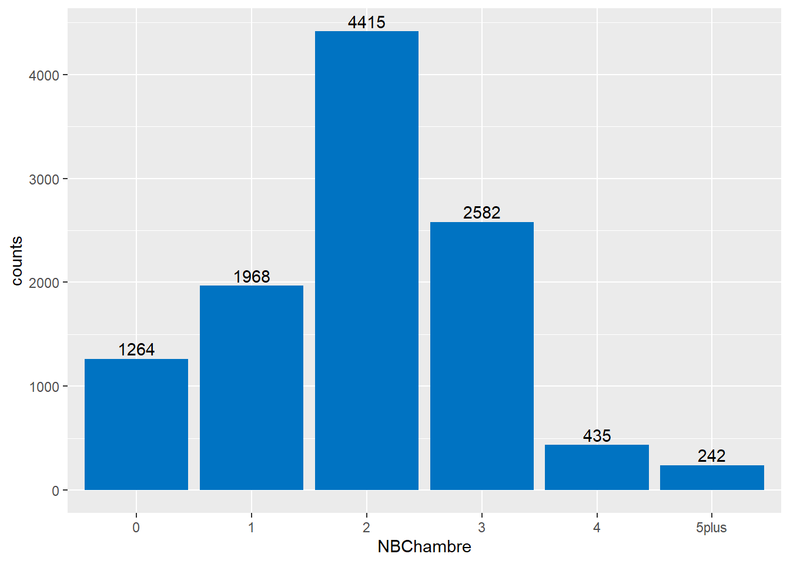
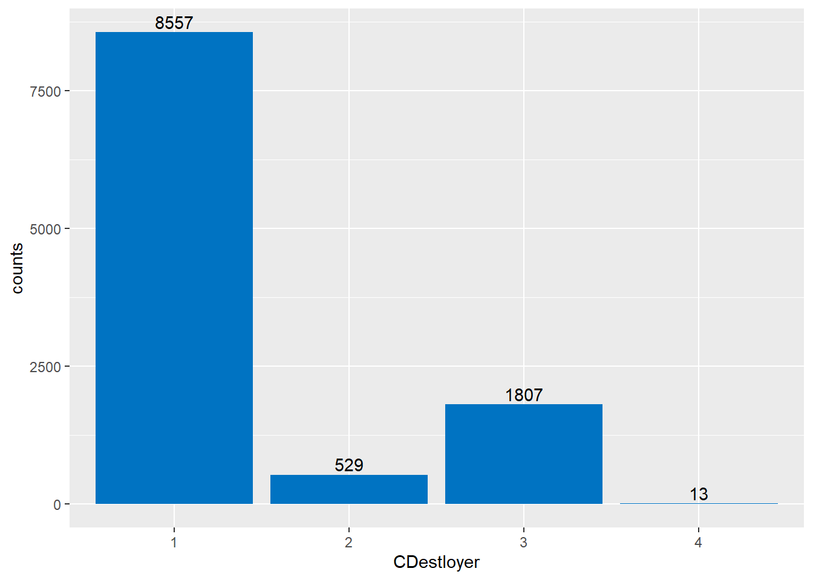
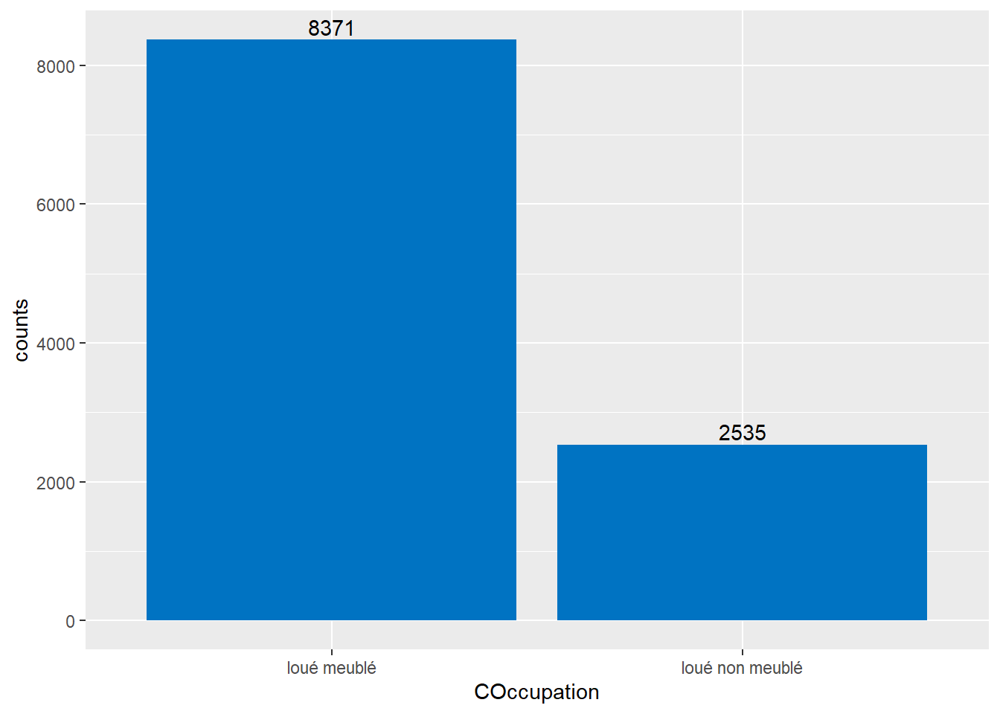
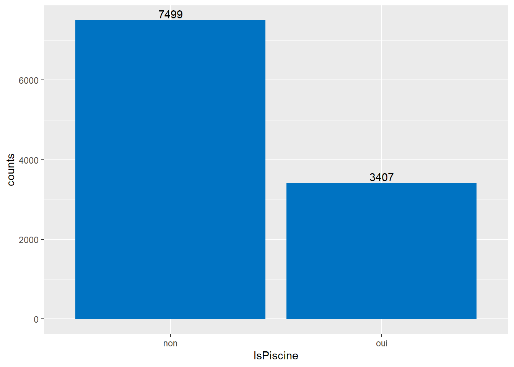
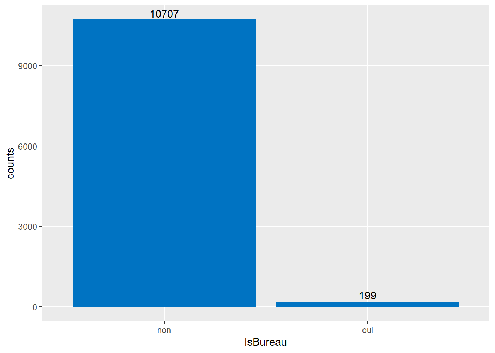
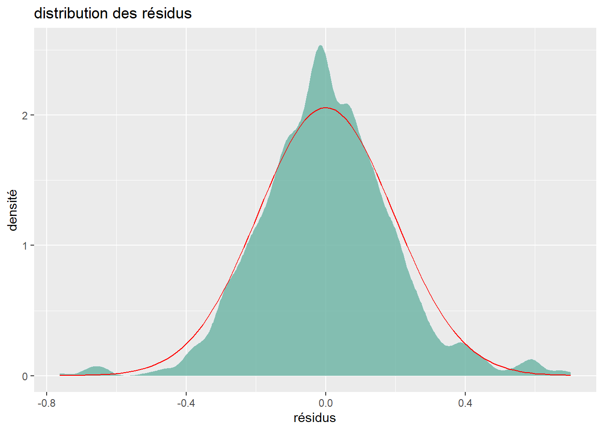
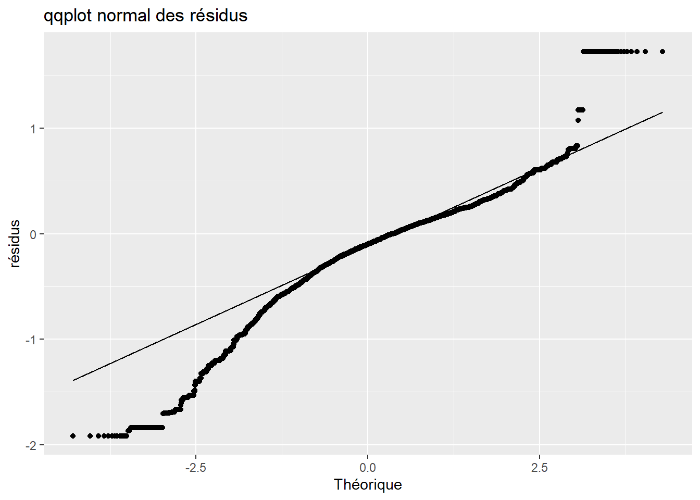
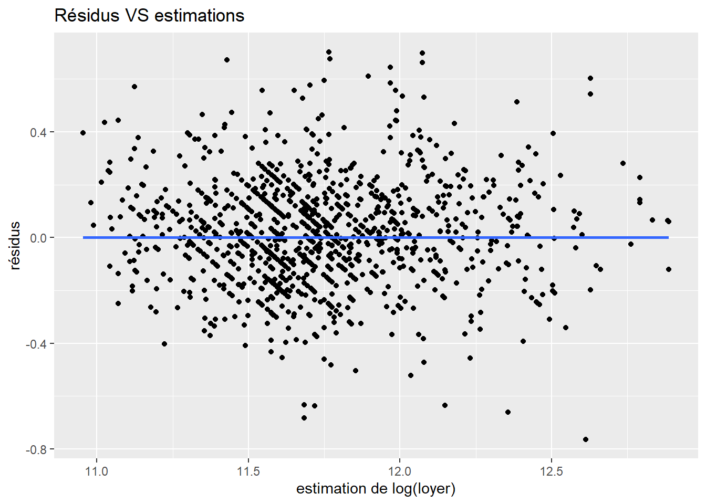

1 Résumé
L’objectif de ce travail est de construire un modèle hédonique des loyers sur Tahiti et Moorea, c’est-à-dire trouver une fonction des caractéristique du logement permettant d’estimer le loyer de celui-ci. Ce travail est une tentative de reproduire un travail similaire de l’Office Fédérale Suisse présenté dans le rapport Fourcade, L. (2022), Indice des loyers : rapport méthodologique, Publication OFS.
Le modèle construit est Log-linéaire. Sa forme est décrite ci-dessous, à savoir que certaine caractéristique des logements ne sont pas codées par une seule variables mais par plusieurs variables indicatrices (dummy variables) des différentes modalités de ces caractéristiques. Les coefficients du modèles sont présentés en annexe [Modèle]. Les coefficients du modèles ont étés estimé par la méthode des carrés ordinaire en prenant 10906 observation de loyers sur 810 logements différents.
\begin{align*}
\log(\mathrm{loyer}) =&\beta_0 + \beta_1 \; \mathrm{Commune} & \\
&+ \beta_2 \; \mathrm{Nombre\ de\ chambe} \;+ \beta_3 \; \mathrm{Surface\ habitable}\\
&+ \beta_4 \; \mathrm{meublé} \;+ \beta_5 \; \mathrm{Propriétaire}\\
&+ \beta_6 \; \mathrm{Bureau} \;+ \beta_7 \; \mathrm{Piscine} \; + \beta_8 \; \mathrm{type\ de\ construction}\\
&+\beta_9 \; \mathrm{Taxes} \;+ \beta_{10} \; \mathrm{Entetien\ jardin} \;+ \beta_{11} \; \mathrm{Charges\ eau}\;+ \beta_{12} \; \mathrm{charges\ ordures} \;+ \beta_{13} \; \mathrm{Autres\ charges}\\
&+ \varepsilon
\end{align*}
Le R^2 ajusté de ce modèle est de 0.7651 sur les données d’entraînement mais chute à 0.6120 sur des données différentes ce qui semble indiquer un léger overfit. Le modèle reste tout de même assez performant, ayant une erreur moyenne d’estimation des loyers de 20 000 xpf environ.
Les résidus ont une espérance nulle, ne sont pas corrélé aux estimation des loyers, ne suivent pas une loi normale et n’ont pas une variance constante (hétéroscédasticité). L’hétéroscédasticité et la non normalité invalide les t-test des coefficients du modèles.
Cependant, les résidus suivent une distribution presque normale et ont une variance qui semble assez stable (faible hétéroscédasticité), aussi il convient de modérer cette source d’erreur.
2 Avant-propos
2.1 Motivation & objectif
Dans le calcul d’un indice des prix à la consommation, le sous indice des prix du groupe 4.1 de la COICOP se rapportant aux loyers d’habitation est particulièrement difficile à traiter. En effet, le marché locatif est caractérisé par deux faits, premièrement une forte décentralisation, c’est-à-dire que la location peut se faire de particulier à particulier, de particulier à entreprise de gestion ou de particulier à agence immobilière. Du fait de cette forte délocalisation, le relevé des loyers se fait généralement par le biais d’une enquête auprès des locataires plutôt que des bailleurs.
La deuxième caractéristique du marché locatif est l’hétérogénéité des biens. Les instituts de statistiques procèdent généralement à une enquête par échantillonnage stratifié de manière à ce que les biens interrogés soient représentatifs du parc locatif courant. Cependant, des biens d’une même strate peuvent avoir des caractéristiques très différentes (e.g. si les strates sont définis par zone géographiques et âges des logements, deux biens peuvent appartenir à la même strate tout en ayant des superficies très différentes). Ces différences de caractéristiques peuvent, dans le cadre d’un renouvellement des logements suivis, entraîner une variation de l’indice des loyers non représentative d’une variation globale des loyers. Aussi, plusieurs instituts utilisent des modèles hédoniques pour éviter ce phénomène. On peut citer l’Office fédérale de la Statistique (Suisse,OFS) qui procède à un réajustement des loyers basé sur un modèle hédonique ou Statistiques Canada qui calcule l’indice des loyers avec un tel modèle.
Les modèles utilisés par les instituts de statistiques requièrent souvent un jeu de données très grand pour pouvoir déterminer les coefficients de ces modèles (près de cent mille observations pour l’OFS, dix mille observation pour Statistiques Canada).
Le but de ce travail est de voir si les données récupérées par l’ISPF permettent de réaliser un modèle similaire propre à la Polynésie française. En particulier, on s’inspire beaucoup du travail réalisé par l’OFS et présenté dans Fourcade, L. (2022), Indice des loyers : rapport méthodologique, Publication OFS. On se permet de mentionner aussi Keshishbanoosy & Taylor (2019), New approach for estimating the rent component of the Consumer Price Index qui présente le travail de Statistiques Canada.
2.2 Théorie de la demande hédonique
L’hypothèse centrale des modèles hédoniques est que le prix du bien ou service considéré est déterminé par ses caractéristiques. Ce genre de modèle est courant dans le domaine de l’immobilier.
Les instituts de statistiques du Canada et de la Suisse ont tous deux choisis comme modèle hédonique des modèles de forme Log-Linéaire, c’est-à-dire que le logarithme du loyer égal à la somme d’une fonction affine en les caractéristiques du logement et d’un bruit. On suppose donc la forme suivante :
\log(\mathrm{loyer}) = \beta_0 + \sum_{c\, \in \, \{\mathrm{covariables}\}} \beta_c \; c \; \;+ \varepsilon
Ces instituts réalisent ensuite une régression linéaire de manière à déterminer les coefficients \beta.
2.3 Enquête Loyers et Charge de l’ISPF
L’ISPF relève les loyers dans le cadre de l’Enquête Loyers et Charge. Le questionnaire de cette enquête est disponible en ligne. Cette enquête est réalisée sur Tahiti et Moorea uniquement, l’échantillon est présentement de 660 logements avec interrogation semestrielle, les non-réponses sont gérées par substitution (le logement remplaçant étant choisi par l’enquêteur sur le terrain).
De cette enquête on peut obtenir 22 variables qui semblent être caractéristique d’un logement. On a rangé ces variables par types (spatiale, temporelle, caractéristiques du bail, de surface etc.). Les variables et leurs type sont disponibles en annexe [Variables].
On fait remarquer que le format de l’enquête sans renouvellement et avec gestion de non-réponse par substitution peut rendre les données récoltées moins représentatives de la population générale. Aussi, le modèle développé ici peut être moins performant sur de nouvelles données dans le cas d’un renouvellement des logements interrogés.
3 Méthodologie
3.1 Traitement des données
On as pris en entrée une table de données contenant les réponses au questionnaires de l’enquête loyers et charges. Celui-ci comportait des informations personnelles ainsi que des entrés incohérentes. Cette table contient 10906 observations pour 810 logements différents.
On as supprimé toutes les informations personnelles (prénom, nom, numéro de téléphone, etc.) des locataires ainsi que les informations les plus précise sur la localisation contenue dans cette table. Pour la localisation, on ne conserve que la commune et le district des logements.
Dans la table, il y a trois information sur le loyers : le loyer au décembre précédent, le loyer présent hors charges, le loyer présent charges comprises. Sur de nombreuses observations, le loyers hors charges est inférieur au loyer charges comprises. Aussi, on as décidé, de manière à avoir le loyer toute charges comprises de prendre le maximum entre les trois loyers fournis.
Enfin, on a remplacés les réponses invraisemblable( surface nulle, plus de 100 pièces, etc.) par des Not Available et on as regroupé les modalités minoritaires ensemble.
La majorité des données que l’on utilise dans notre travail sont des variables catégorielle (pouvant prendre un nombre fini de valeur). Par exemple, on code par un chiffre compris entre 1 et 7 le type de logement. Utiliser ce code dans une régression rendrait difficile, voire impossible, l’interprétation des coefficients du modèles aussi, pour intégrer dans notre régression des variables catégorielles, on utilise des dummy variables, ou variables muettes/fictives/indicatrices.
Le principe est le suivant : étant données une variable catégorielle var à n modalités numéroté de 1 à n, on construit n-1 variables indicatrices1 (nos dummy variables) var_1,var_2,var_n-1 où var_i prend la valeur 1 si var est égal à 1, 0 sinon.
On calcule des dummy variables pour toutes nos variables catégorielles.
3.2 Détermination du modèle
On rappel que l’on l’on cherche as trouver un modèle de la forme :
\log(\mathrm{loyer}) = \beta_0 + \sum_{c\, \in \, \{\mathrm{covariables}\}} \beta_c \; c \; \;+ \varepsilon
Où, les coefficients \beta seront évalués par la méthode des moindres carrés ordinaire.
Avec la forme de modèle choisie, on peut calculer plusieurs modèles en prenant, ou non, certaines covariables en compte. Mettre beaucoup de covariables dans un modèle permet d’améliorer les prédictions du modèle sur les données d’entrainements, au risque que les prédictions du modèle sur d’autres données soient moins bonne. Mettre trop peu de covariables dans un modèle risque de réduire la qualité des prédictions du modèle. Aussi il nous faut choisir ni trop, ni trop peu de covariables dans notre modèle.
Pour choisir un modèle ni trop simple, ni trop compliqué, on procède ici comme suit : on calcule plusieurs modèles, pour chacun on calcule des statistiques qui nous permettent de les comparer, on choisit le meilleur modèle selon ces statistiques, on modifie le modèle retenue de manière à l’améliorer.
Ne pouvant calculer 22! modèles, on sélectionne plusieurs modèle qui peuvent être interessant. Pour ce faire, on regroupe tout d’abord les variables en plusieurs type (temporelle, spatiale, surface logement,etc.) et on fait des paquets de variables dans ces groupe de types. On vient ensuite choisir un paquet de variable par groupe de type de variables. Les paquets de variables par groupe de type sont disponible en annexe [Paquets de variables]. On as donc 810 modèles possibles à calculer.
Pour chacun de ces modèles, ont calcule tout d’abord le R^2 et le R^2 ajusté. On calcule aussi les erreurs absolues moyennes et erreurs quadratiques ainsi que els p-valeurs de différents test qui vérifie si les résidus suivent une loi normales. Enfin, on calcule les AIC et BIC (Akaike Information Criterion, Bayesian Information Criterion) qui sont des coefficients qui permettent de comparer différents modèles. Ces deux coefficients diminue lorsque le nombre de covariables augmente ou lorsque le modèle colle mieux aux données. Ils permettent donc, en choissisant le modèle ayant les plus petits AIC et BIC, de prendre un modèle qui donne de bonne prédiction tout en évitant l’overfit.
On choisit de se limiter au modèle n’ayant pas comme covariable LoyerAct_Annee,CDist, ou CNBPieces. On ne prends pas la covariables LoyerAct_Annee Pour que l’on puisse utiliser le modèle sur des données plus récentes ou plus anciennes que celle d’entrainement, on ne prends pas la covariables CDist car il existe plusieurs district qui ne sont pas présent dans le données d’entrainements, on ne prends pas la covariables CNBPieces car celle-ci est trop fortement corrélé à d’autres covariables. On présente dans deux tableaux ci-dessous les 5 meilleurs modèles selon le critère BIC.
tableau des covariables des cinqs meilleurs modèles
tableau des statistiques des cinqs meilleurs modèles
Pour modifier le modèle retenue, ici le modèe 27, on va retirer des covariables de manières successive tant que cela diminue le BIC. On s’arrête dès que l’on ne peut plus retirer de covariables du modèle sans augmenter le BIC. Voici-ci dessous les iterations successives de ce procédé, le modèle à conservé étant la dernière itération de celui-ci, sur le modèle 27 du tableau précédent:
tableau des iterations successive de l’algorithme
4 Modèle
4.1 Forme du modèle
Le modèle retenue dans la partie précédente est le suivant :
\begin{align*} \log(\mathrm{loyer}) =&\beta_0 + \beta_1 \; \mathrm{Commune} & \\ &+ \beta_2 \; \mathrm{Nombre\ de\ chambe} \;+ \beta_3 \; \mathrm{Surface\ habitable}\\ &+ \beta_4 \; \mathrm{meublé} \;+ \beta_5 \; \mathrm{Propriétaire}\\ &+ \beta_6 \; \mathrm{Bureau} \;+ \beta_7 \; \mathrm{Piscine} \; + \beta_8 \; \mathrm{type\ de\ construction}\\ &+\beta_9 \; \mathrm{Taxes} \;+ \beta_{10} \; \mathrm{Entetien\ jardin} \;+ \beta_{11} \; \mathrm{Charges\ eau}\;+ \beta_{12} \; \mathrm{charges\ ordures} \;+ \beta_{13} \; \mathrm{Autres\ charges}\\ &+ \varepsilon \end{align*}
Cependant, comme expliqué précédemment en partie [Traitement des données], la plupart de ces variables sont des variables catégorielles qu’il convient de ne pas intégrer dans la régression directement. On remplace donc les variables catégorielles par plusieurs variables indicatrice de chaque modalités. Par exemple à la place de \beta_1 \mathrm{Commune} on as en réalité \beta_1^1 \mathrm{Commune\ 1} + \beta_1^2 \mathrm{Commune\ 2}+ \dots, où \mathrm{Commune\ 1} vaut 1 si le logement se situe dans la commune 1, 0 sinon.
Si une variable catégorielle a n modalités, on créera n-1 variables indicatrices. La modalité pour laquelle on ne crée pas de variables indicatrices est la modalité la plus présente dans notre jeu de données et sera notre modalité de référence.
les variables du modèles et les estimations des coefficients associés sont donnés ci-dessous. On y retrouve aussi l’estimation de son écart type (Std. Error) et la p-valeur du t-test de Student qui est la probabilité d’obtenir l’estimation du coefficient indiqués si le coefficient réel est en fait nul.
Call:
lm(formula = formula, data = dt)
Residuals:
Min 1Q Median 3Q Max
-0.76330 -0.11948 -0.00456 0.11359 0.70241
Coefficients:
Estimate Std. Error t value Pr(>|t|)
(Intercept) 1.159e+01 7.696e-03 1506.544 < 2e-16 ***
CCom_12 9.706e-03 9.840e-03 0.986 0.323971
CCom_15 -3.371e-02 6.537e-03 -5.157 2.55e-07 ***
CCom_22 -2.498e-01 1.581e-02 -15.798 < 2e-16 ***
CCom_25 -1.428e-01 9.046e-03 -15.781 < 2e-16 ***
CCom_29 -1.262e-01 8.543e-03 -14.779 < 2e-16 ***
CCom_33 -1.968e-01 9.997e-03 -19.689 < 2e-16 ***
CCom_34 -1.675e-01 1.008e-02 -16.622 < 2e-16 ***
CCom_35 7.206e-02 6.191e-03 11.640 < 2e-16 ***
CCom_36 -1.065e-02 8.256e-03 -1.290 0.196991
CCom_47 -3.964e-01 1.048e-02 -37.828 < 2e-16 ***
CCom_48 -2.138e-01 1.172e-02 -18.246 < 2e-16 ***
CCom_52 -4.291e-01 1.435e-02 -29.891 < 2e-16 ***
CConstruction_1 -1.254e-01 1.136e-02 -11.045 < 2e-16 ***
CConstruction_2 -6.109e-03 3.828e-02 -0.160 0.873201
CConstruction_4 -2.240e-01 2.152e-02 -10.409 < 2e-16 ***
CConstruction_5 -2.117e-01 6.646e-03 -31.850 < 2e-16 ***
NBChambre_0 -4.201e-01 7.043e-03 -59.647 < 2e-16 ***
NBChambre_1 -1.875e-01 5.765e-03 -32.517 < 2e-16 ***
NBChambre_3 2.009e-01 5.958e-03 33.722 < 2e-16 ***
NBChambre_4 2.103e-01 1.164e-02 18.070 < 2e-16 ***
NBChambre_5plus 2.822e-01 1.817e-02 15.533 < 2e-16 ***
COccupation_2 -2.324e-02 4.613e-03 -5.039 4.75e-07 ***
CDestloyer_2 5.132e-02 8.962e-03 5.726 1.05e-08 ***
CDestloyer_3 1.609e-02 5.551e-03 2.898 0.003767 **
CDestloyer_4 1.319e-01 5.428e-02 2.429 0.015139 *
IsBureau 5.948e-02 1.442e-02 4.126 3.73e-05 ***
IsPiscine 3.079e-01 5.643e-03 54.563 < 2e-16 ***
IsTaxeseauxord -3.806e-02 4.981e-03 -7.641 2.33e-14 ***
IsEntretienJardin 8.162e-02 4.948e-03 16.496 < 2e-16 ***
IsProvisionEau -2.273e-02 5.872e-03 -3.870 0.000109 ***
IsOrdureMenage 9.742e-02 6.556e-03 14.859 < 2e-16 ***
IsAutrefrais 2.626e-02 7.726e-03 3.398 0.000680 ***
SurfaceH 1.777e-03 6.892e-05 25.779 < 2e-16 ***
---
Signif. codes: 0 '***' 0.001 '**' 0.01 '*' 0.05 '.' 0.1 ' ' 1
Residual standard error: 0.194 on 10872 degrees of freedom
Multiple R-squared: 0.7658, Adjusted R-squared: 0.7651
F-statistic: 1077 on 33 and 10872 DF, p-value: < 2.2e-164.2 Détails des variables
Dans toute cette partie, les codes ce réfèrent à ceux entrés dans le questionnaire de l’enquête loyer et charges.
4.2.1 Commune
La variable CCom code la commune des logements, on retrouve sur le site de l’INSEE le code de chaque commune de la Polynésie française. On trouve ci-dessous la répartition de nos observation en fonction des communes. Ce nous permet de voir que certaines communes comportent peu de relevés. En particulier, les commune 22 (Hitiaa O Te Ra) et 52 (Teva I Uta) ont peut être trop peu d’’élément.

La commune la plus représenté parmis nos données est la commune de Punaauia de code 38. Ainsi, la commune de Punaauia est notre commune de référence, cela veut dire que l’analyse des coefficients des variables indicatrices se fait par rapport à celle de Punaauia. Par exemple, la commune de Papeete (code 35), as un coefficients associé de valeur 7.206e-2, toute chose égale par ailleurs, le loyer d’un logement à Papeete sera donc 7.5% plus élevé que le loyer d’un logement à Punaauia2.
De même, un logement à Hitiaa O Te Ra (code 22), aura un loyer, toute choses égale par ailleurs, 22% pourcent moins élevés que celui d’un logement à Punaauia3.
4.2.2 Construction
On trouve ci-dessous la distribution des types de constructions. On peut voir que les maisons individuelles modernes (code 3) sont majoritaire, il s’agit là de notre type de construction de référence.
Au vue de cette histogramme, il apparaît qu’il faudrait regrouper les “Immeuble style HLM” (code 4) et les “Immeuble collectif autre style HLM” en une seule catégorie “Immeuble”. Ce regroupement est en plus justifié par la faible différence de coefficient de CConstruction_4 et CConstruction_5.
Il semble aussi judicieux de regrouper les logement de type 1 et 2 (respectivement maisons individuelles traditionelle et fare MTR) en un groupe “autres”.

4.2.3 Nombre de chambre
On trouve ci-dessous la distribution des nombre de chambres. Le nombre de chambre de référence est de 2.
Il semble y avoir assez d’observation pour chaque groupe. Il ne serait en revanche pas dérangeant de regrouper les nombres de chambre en créant la catégorie “4 et plus”. Ce choix peut être critiqué du fait que les logements à 5 chambres sont 7% plus chère que ceux à 4 chambres, toutes choses égales par ailleurs, dans ce modèle.

4.2.4 Destinataire du loyer
On trouve ci-dessous la distribution des relevés en fonction du destinataire du loyer et par statut d’occupation du logement. La majorité des locataires des logements interrogés payent leurs loyer et loge des meublés.
On justifie le non regroupements des types de destinataire du loyer autre que “particulier” (code1) en un seul groupe “autre destinataire”,malgrès le très faible nombre d’observation, par la différence considérable des coefficients des variables indicatrices du type de destinataire.
En ce qui concerne le statut d’occupation, il semble il y avoir assez d’observation des catégories “meublé” et “non meublé”, en revanche la catégorie “accédant à la propriété” contient très peu d’entrée. Cette dernière catégorie as été omise du fait qu’il ne s’agisse pas d’une location.


4.2.5 Bureau & Piscine

gfr

4.3 Analyse du modèle
4.3.1 Performance
Pour mesurer la performance du modèle on garde plusieurs métrique : le R^2 ajusté, l’erreur absolue moyenne (MAE) de la régression, l’erreur quadratique moyenne (RMSE) de la régression, l’erreur absolue moyenne exprimé en franc pacifique et l’erreur quadratique moyenne exprimé en franc pacifique.
On peut mesurer la performance du modèle sur les données d’entrainements (in-sample) ou la mesurer sur des données différentes (out-of-sample). On trouve ci-dessous un tableau présentant les performance du modèle in-sample ( 2021-2024) et out-of-sample (2015-2018) ainsi que le code pour calculer les résultat out-of-sample.
#|eval: false
DATA <- data_loyer[(LoyerAct_Annee<=2011)&(LoyerAct_Annee>=2005)]
source("src/3.data_preparation.R")
DATA_Work <- getDATAPresent(DATA,iterative,nrow(iterative)-1)
source("src/7.model_evaluation.R")| type d’évaluation | R^2 adj. | MAE | RMSE | MAE en xpf | RMSE en xpf |
|---|---|---|---|---|---|
| In-sample | 0.7651 | 0.1466 | 0.1937 | 20556 xpf | 31440 xpf |
| Out-of-sample (2015-2018) | 0.6120 | 0.2263 | 0.2996 | 23991 xpf | 31808 xpf |
| Out-of-sample (2006-2011) | 0.3788 | 0.2749 | 0.3887 | 28920 xpf | 40759 xpf |
4.3.2 Analyse des résidus
Les résidus ne suivent pas, selon le test de Jarque-Bera, une loi normale. Ils ont cependant une espérance nulle et le tracé, ci-dessous, de la densité empirique (en vert) des résidus ne semblent pas très éloigné de la densité d’une loi normale (en rouge). Cette quasi normalité des résidus se retrouve sur le diagramme quantile-quantile normale.
Ensuite, selon le test de Breusch-Pagan, les résidus sont ne sont pas homoscédastique (i.e. les variances des résidus ne sont pas les même). Plus les résidus sont hétéroscédastique plus ils seront dispersé sur le nuage de point des résidus en fonction de l’estimation du loyer. Ce nuages de point ce trouve ci-dessous et permets de voir que la dispersion n’est pas très grande aussi, hétéroscédasticité ne doit pas être très grande.
Enfin, toujours sur ce nuage de point, on voit qu’il n’y as pas de corrélation entre les résidus et l’estimation des loyers.
Les propriété de non-normalité et d’hétéroscédasticité ne permettent pas de garantir les résultats usuelle des régression linéaire. On ne peut pas, en particulier, affirmer que les estimations des loyers sont les meilleurs estimations non-biaisé. De plus, les t-test des coefficients sont invalidés.
Magré cela, les analyses précédentes ne sont pas à jeter du fait de la presque normalité des résidus et de la faible d’hétéroscédasticité de ceux-ci.


`geom_smooth()` using formula = 'y ~ x'
5 Conclusion et ouverture
5.1 Limites
Il existe plusieurs limite à ce travail, on tente ici d’énoncer certaine de ces limites.
Tout d’abord, ce modèle utilise des variables qui ne sont pas récolté durant d’autres enquête que l’enquête loyers et charge. En particulier, ce modèle ne permet pas une estimation des loyers à partir du RP. Ainsi, ce modèle ne permet que d’estimer les loyers des logements ayant déjà effectivement répondu à l’enquête loyers et charge.
Ensuite
Ensuite, VARIABLES BOFS DES FOIS
???
5.2 Conclusion
A partir des données de l’enquête loyers et charge de l’ISPF, on arrive à faire un modèle hédonique des loyers avec une performancequi semble convenable sur les données d’entraînement (loyers relevés en 2021-2024) avec un R^2 ajusté de 0.7651 qui tombe à 0.6120 pour les loyers relevés entre 2015 et 2024, pour une erreur moyenne d’estimation des loyers proche de 20 000xpf. Cette baisse de R^2 ajusté peut indiquer un léger overfit.
De plus, ce modèle as des performances qui chute lorsqu’il est évalué sur les loyers relevé entre 2005 et 2011.
Cette chute de performance est à relativiser car le coût de la vie entre 2005 et 2024 est bien différents. On offre l’explication suivante à cette chute. Malgrès un grand nombre d’observation dans nos données d’entrainement (10906) il y a très peu de logements différents (810 logements différents). Cela veut dire que les loyers et caractéristiques d’un même logements ont été utilisé plusieurs fois dans la régression. Cela donne un poids plus grand aux logements ayant répondu plusieurs fois à l’enquête loyers et charge entre 2021 et 2024 et peut être la source d’overfit. Cette overfit n’aurait pas été grave pour l’évaluation du modèle sur les loyers entre 2015 et 2024 !non je viens de checker, sur 1024 logement entre 2015 et 2018, seul 124 sont aussi dans les logements de 2021-2024
Malgrès ces bonne performance, le modèle souffre d’un problème majeure : malgrès un grand nombre d’observation dans nos données d’entrainement (10906) il y a très peu de logements différents (810 logements différents). Cela veut dire que les loyers et caractéristiques d’un même logements ont été utilisé plusieurs fois dans la régression. Cela donne un poids plus grand aux logements ayant répondu plusieurs fois à l’enquête loyers et charge entre 2021 et 2024
Après pas assez de logement
ASSEZ D’ENTREE MAIS BON CA REVIENT A DOUBLER/ multiplieer certain logement
5.3 ouverture
Enfin, dans ce travail on as utilisé pour réaliser la régression toutes les observation de loyer depuis 2021, un même logement peut donc avoir plusieurs entrée qui lui sont associées dans la base de donnés. Ce choix permet d’augmenter le nombre d’observation sur lequel le modèle s’entraine mais donne une importance bien plus grande au logement suivies depuis longtemps et risque d’augmenter artificiellement le R^2.
On as donc décider de réaliser une seconde régression pour le même modèle, cette fois ci en pondérant les observations de manière à réduire le poids des observations associées à un logements dont le loyer as été observé plusieurs fois4. Les estimations des coefficients,présentés ci-dessous, sont proches des estimations de la régression linéaire non-pondéré et le R^2 ajusté et lui même proche de celui de la régression linéaire non-pondéré. On conclu donc que le fait de ne pas pondéré les observation n’est pas dérangeant.
source("src/9.weighted_model_calculation.R")
source("src/7.model_evaluation.R")
selected_model_summary
Call:
lm(formula = formula, data = dt, weights = dt$poids)
Weighted Residuals:
Min 1Q Median 3Q Max
-0.77068 -0.02558 0.00089 0.02600 0.52001
Coefficients:
Estimate Std. Error t value Pr(>|t|)
(Intercept) 1.129e+01 5.793e-03 1948.432 < 2e-16 ***
CCom_12 8.272e-02 6.028e-03 13.721 < 2e-16 ***
CCom_15 -3.549e-02 5.045e-03 -7.035 2.01e-12 ***
CCom_22 -3.824e-01 8.473e-03 -45.126 < 2e-16 ***
CCom_25 -1.742e-02 6.001e-03 -2.903 0.0037 **
CCom_29 -5.722e-02 5.678e-03 -10.077 < 2e-16 ***
CCom_33 -1.751e-01 6.190e-03 -28.288 < 2e-16 ***
CCom_34 -1.538e-01 7.730e-03 -19.892 < 2e-16 ***
CCom_36 9.455e-02 5.025e-03 18.816 < 2e-16 ***
CCom_38 -3.017e-02 4.265e-03 -7.074 1.53e-12 ***
CCom_47 -3.435e-01 7.835e-03 -43.838 < 2e-16 ***
CCom_48 -3.746e-01 1.005e-02 -37.292 < 2e-16 ***
CCom_52 -4.329e-01 1.062e-02 -40.754 < 2e-16 ***
CCom_56 -8.971e-02 5.364e-02 -1.673 0.0944 .
CConstruction_1 -1.283e-01 6.125e-03 -20.941 < 2e-16 ***
CConstruction_2 -5.341e-02 1.105e-02 -4.835 1.34e-06 ***
CConstruction_4 1.608e-01 3.501e-02 4.594 4.36e-06 ***
CConstruction_5 -2.571e-02 4.062e-03 -6.330 2.47e-10 ***
CConstruction_6 -8.943e-03 3.240e-02 -0.276 0.7825
NBChambre_0 -2.817e-01 5.054e-03 -55.742 < 2e-16 ***
NBChambre_1 -1.705e-01 3.890e-03 -43.845 < 2e-16 ***
NBChambre_3 1.196e-01 3.662e-03 32.666 < 2e-16 ***
NBChambre_4 7.101e-02 8.135e-03 8.729 < 2e-16 ***
NBChambre_5plus 2.329e-01 2.405e-02 9.683 < 2e-16 ***
COccupation_2 -2.596e-01 2.943e-03 -88.219 < 2e-16 ***
COccupation_3 -3.169e-01 3.105e-02 -10.205 < 2e-16 ***
COccupation_4 -1.184e+00 6.250e-02 -18.942 < 2e-16 ***
CDestloyer_2 5.225e-02 5.930e-03 8.811 < 2e-16 ***
CDestloyer_3 8.601e-02 3.836e-03 22.421 < 2e-16 ***
CDestloyer_4 -1.358e-01 1.872e-02 -7.253 4.13e-13 ***
IsBureau 8.320e-02 5.818e-03 14.301 < 2e-16 ***
IsPiscine 3.101e-01 4.112e-03 75.414 < 2e-16 ***
IsTaxeseauxord 2.273e-02 2.990e-03 7.603 2.94e-14 ***
IsEntretienJardin -3.326e-02 2.844e-03 -11.696 < 2e-16 ***
IsProvisionEau 3.590e-02 6.013e-03 5.971 2.37e-09 ***
IsOrdureMenage 4.372e-02 5.915e-03 7.393 1.46e-13 ***
IsAutrefrais 4.867e-02 5.693e-03 8.549 < 2e-16 ***
SurfaceH 4.134e-03 5.249e-05 78.759 < 2e-16 ***
---
Signif. codes: 0 '***' 0.001 '**' 0.01 '*' 0.05 '.' 0.1 ' ' 1
Residual standard error: 0.05316 on 56305 degrees of freedom
Multiple R-squared: 0.5631, Adjusted R-squared: 0.5628
F-statistic: 1961 on 37 and 56305 DF, p-value: < 2.2e-166 Annexe
6.1 Variables
| Groupe | Nombre de variable dans le groupe |
|---|---|
| Temporel | 1 |
| Spatiale | 2 |
| Caractéristique de surface | 5 |
| Caractéristique du bail | 2 |
| Caractéristique du logement | 3 |
| Charges | 9 |
| Nom de la variable | Signification | Type |
|---|---|---|
LoyerAct_Anne |
Année où le loyer relevé as été payé | Temporelle |
CCom |
Commune | Spatiale |
CDist |
District | Spatiale |
CConstruction |
Type de construction | Caractéristique du logement |
CNBPieces |
Nombre total de pièces | Caractéristique de surface |
NBChambre |
Nombre de chambres | Caractéristique de surface |
NBSDB |
Nombre de salle de bain et wc | Caractéristique de surface |
SurfaceT |
Surface du terrain | Caractéristique de surface |
SurfaceH |
Surface habitable | Caractéristique de surface |
COccupation |
Statut d’occupation | Caractéristique du bail |
CDestloyer |
Destinatire du loyer | Caractéristique du bail |
IsBureau |
Présence d’une pièce as usage professionnel | Caractéristique du logement |
IsPiscine |
Présence d’une piscine | Caractéristique du logement |
IsChargesloc |
Loyer comprenant des charges | Charges |
IsTaxeseauxord |
Loyers comprennant des taxes communales | Charges |
IsChargeCopro |
Loyers comprennant des charges de copropriétés | Charges |
IsEntretienJardin |
Loyers comprennant des charges d’entretien du jardin | Charges |
IsGardien |
Loyers comprennant des charges de gardiennage | Charges |
IsMenage |
Loyers comprennant des charges de ménage | Charges |
IsProvisionEau |
Loyers comprennant des provisions pour l’eau | Charges |
IsOrdureMenage |
Loyers comprennant des provisions pour les ordures ménagères | Charges |
IsAutreFrais |
Loyers comprennant d’autres charges | Charges |
6.2 Paquets de variables
| Paquet | LoyerAct_Annee |
|---|---|
| Paquet 1 | X |
| Paquet 2 |
| Paquet | CCom |
CDist |
|---|---|---|
| Paquet 1 | X | |
| Paquet 2 | X | |
| Paquet 3 | X | X |
| Paquets | SurfaceH |
SurfaceT |
NBSDB |
NBChambre |
CNBPiece |
|---|---|---|---|---|---|
| Paquet 1 | X | X | |||
| Paquet 2 | X | X | |||
| Paquet 3 | X | X | |||
| Paquet 4 | X | X | X | ||
| Paquet 5 | X | X | X | X | X |
| Paquets | COccupation |
CDestloyer |
|---|---|---|
| Paquet 1 | ||
| Paquet 2 | X | |
| Paquet 3 | X | X |
| Paquets | CConstruction |
IsBureau |
IsPiscine |
|---|---|---|---|
| Paquet 1 | |||
| Paquet 2 | X | ||
| Paquet 3 | X | X | X |
| Paquets | IsTaxeseauxord |
IsChargesloc |
IsChargeCopro |
IsEntretienJardin |
IsGardien |
IsMenage |
IsProvisionEau |
IsOrdureMenage |
IsAutrefrais |
|---|---|---|---|---|---|---|---|---|---|
| Paquet 1 | |||||||||
| Paquet 2 | X | X | |||||||
| Paquet 3 | X | X | X | X | X | X | X | X |
6.3 Modèle
Call:
lm(formula = formula, data = dt, weights = dt$poids)
Weighted Residuals:
Min 1Q Median 3Q Max
-0.77068 -0.02558 0.00089 0.02600 0.52001
Coefficients:
Estimate Std. Error t value Pr(>|t|)
(Intercept) 1.129e+01 5.793e-03 1948.432 < 2e-16 ***
CCom_12 8.272e-02 6.028e-03 13.721 < 2e-16 ***
CCom_15 -3.549e-02 5.045e-03 -7.035 2.01e-12 ***
CCom_22 -3.824e-01 8.473e-03 -45.126 < 2e-16 ***
CCom_25 -1.742e-02 6.001e-03 -2.903 0.0037 **
CCom_29 -5.722e-02 5.678e-03 -10.077 < 2e-16 ***
CCom_33 -1.751e-01 6.190e-03 -28.288 < 2e-16 ***
CCom_34 -1.538e-01 7.730e-03 -19.892 < 2e-16 ***
CCom_36 9.455e-02 5.025e-03 18.816 < 2e-16 ***
CCom_38 -3.017e-02 4.265e-03 -7.074 1.53e-12 ***
CCom_47 -3.435e-01 7.835e-03 -43.838 < 2e-16 ***
CCom_48 -3.746e-01 1.005e-02 -37.292 < 2e-16 ***
CCom_52 -4.329e-01 1.062e-02 -40.754 < 2e-16 ***
CCom_56 -8.971e-02 5.364e-02 -1.673 0.0944 .
CConstruction_1 -1.283e-01 6.125e-03 -20.941 < 2e-16 ***
CConstruction_2 -5.341e-02 1.105e-02 -4.835 1.34e-06 ***
CConstruction_4 1.608e-01 3.501e-02 4.594 4.36e-06 ***
CConstruction_5 -2.571e-02 4.062e-03 -6.330 2.47e-10 ***
CConstruction_6 -8.943e-03 3.240e-02 -0.276 0.7825
NBChambre_0 -2.817e-01 5.054e-03 -55.742 < 2e-16 ***
NBChambre_1 -1.705e-01 3.890e-03 -43.845 < 2e-16 ***
NBChambre_3 1.196e-01 3.662e-03 32.666 < 2e-16 ***
NBChambre_4 7.101e-02 8.135e-03 8.729 < 2e-16 ***
NBChambre_5plus 2.329e-01 2.405e-02 9.683 < 2e-16 ***
COccupation_2 -2.596e-01 2.943e-03 -88.219 < 2e-16 ***
COccupation_3 -3.169e-01 3.105e-02 -10.205 < 2e-16 ***
COccupation_4 -1.184e+00 6.250e-02 -18.942 < 2e-16 ***
CDestloyer_2 5.225e-02 5.930e-03 8.811 < 2e-16 ***
CDestloyer_3 8.601e-02 3.836e-03 22.421 < 2e-16 ***
CDestloyer_4 -1.358e-01 1.872e-02 -7.253 4.13e-13 ***
IsBureau 8.320e-02 5.818e-03 14.301 < 2e-16 ***
IsPiscine 3.101e-01 4.112e-03 75.414 < 2e-16 ***
IsTaxeseauxord 2.273e-02 2.990e-03 7.603 2.94e-14 ***
IsEntretienJardin -3.326e-02 2.844e-03 -11.696 < 2e-16 ***
IsProvisionEau 3.590e-02 6.013e-03 5.971 2.37e-09 ***
IsOrdureMenage 4.372e-02 5.915e-03 7.393 1.46e-13 ***
IsAutrefrais 4.867e-02 5.693e-03 8.549 < 2e-16 ***
SurfaceH 4.134e-03 5.249e-05 78.759 < 2e-16 ***
---
Signif. codes: 0 '***' 0.001 '**' 0.01 '*' 0.05 '.' 0.1 ' ' 1
Residual standard error: 0.05316 on 56305 degrees of freedom
Multiple R-squared: 0.5631, Adjusted R-squared: 0.5628
F-statistic: 1961 on 37 and 56305 DF, p-value: < 2.2e-16Footnotes
On ne mets pas n indicatrice car sinon, la n-ième indicatrice serait linéairement dépendante des autres. En pratique, la modalité sans indicatrice est la modalité la plus présentes dans les données.↩︎
Le modèle étant Log-linéaire on passe la valeurs 7.206e-2 à l’exponentielle : \exp(7.206e-2)=1.075. Le loyer d’un logement à Papeete sera égal au loyer d’un logement à Punaauia multipliée par 1.075.↩︎
Le modèle étant Log-linéaire on passe la valeurs -2.498e-1 à l’exponentielle : \exp(-2.498e-1)=0.78. Le loyer d’un logement à Hitiaa O Te Ra sera égal au loyer d’un logement à Punaauia multipliée par 0.78.↩︎
L’estimation des coefficients, \beta se fait selon le programme de minimisation suivant :
\min_{\beta_0,\dots,\beta_p}\sum_{i \in \mathrm{obsevations}}(y_i-(beta_0 + beta_1 \mathrm{caractéristique\ 1}+\dots + beta_p \mathrm{caractéristique\ p}))^2
Où y_i est le logarithme du loyer de l’observation i . Aussi, si un logement voit son loyer relevé 4 fois, différence entre son loyer et l’estimation de celui-ci apparait 4 fois dans cette somme.
On réalise une régression linéaire pondéré dont le programme de minimisation est :
\min_{\beta_0,\dots,\beta_p}\sum_{i \in \mathrm{obsevations}}w_i(y_i-(beta_0 + beta_1 \mathrm{caractéristique\ 1}+\dots + beta_p \mathrm{caractéristique\ p}))^2
où w_i est le poids accordé à l’observation i. On choisit comme poids pour l’observation i , un sur le nombre de fois que le loyer du logement associé à été relevés. Dans l’exemple précédent où un logement voit son loyer relevé 4 fois, chaque observation de son loyer sera pondéré par 1/4.↩︎